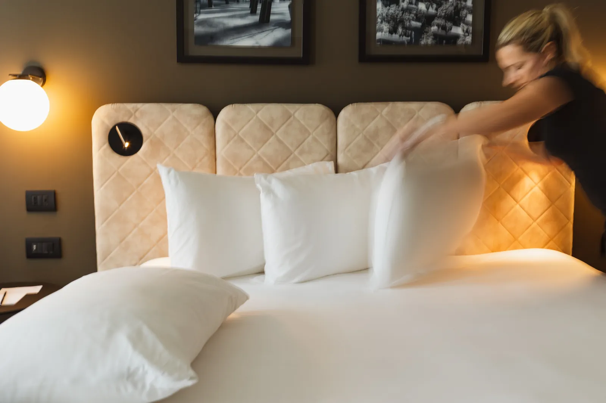

PROPOSTA HERO VARIANTE · bozza riservata alla direzione · a cura di Francesco Astolfi
Variante B
Variante C
Variante A (home)

Dal binario alla camera
00
:
00
00:00
Scendi dal treno a Porta Garibaldi
02:10
Entri dal portone di Via Tocqueville
03:00
Il cuscino che hai scelto è sul letto
Scendi a Garibaldi. Sei arrivato.
Prenota una camera
Organizza un evento